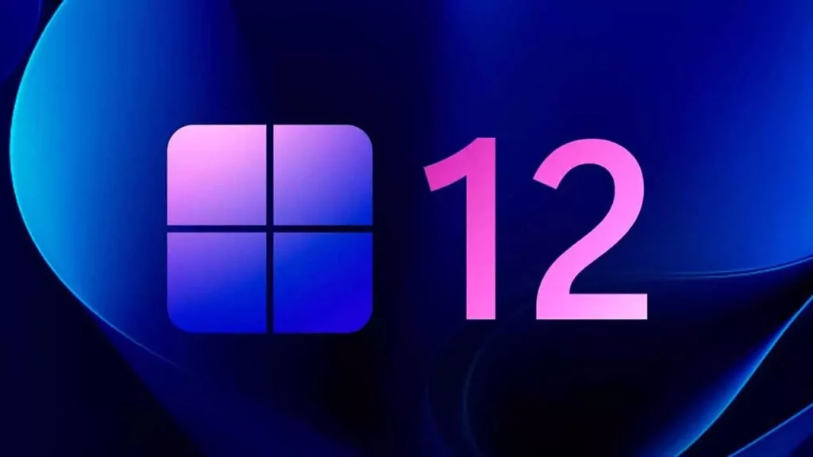
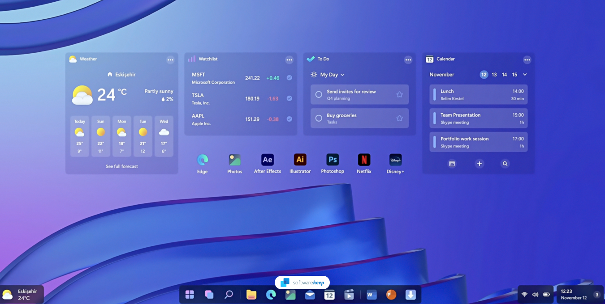
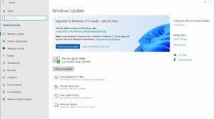

When will Windows 12 be released?
Windows 12 is expected to launch at some point in 2024, most likely in the second half of the year, around the September time frame. That aligns with previous major updates for Windows 11. It's also expected that the next version of Windows will continue the annual update cycle, similar to what we've been seeing for the past couple of years, despite originally being reported to be switching to a three-year development cycle.
Things are still a bit muddy, however, due to changes to the underlying Windows platform. Windows 12 (also known as Hudson Valley) is going to be based on a new platform release codenamed Germanium, the first big update to the Windows platform since Windows 11 launched. However, Germanium itself is expected to be done by April, and it will start showing up on devices in June, though the bulk of Windows 12 features will only release in September.
The reason for this is that Germanium features major improvements for Arm-based devices, such as those powered by the Qualcomm Snapdragon X Elite. Because these devices are a huge step forward for both Qualcomm and Windows, Microsoft wants them to be ready to hit the market as soon as possible, so they'll ship without all the new features at first, and they'll receive the Hudson Valley update later in the year, along with all other existing devices.
Will Windows 12 be a free upgrade?
One of the big questions you're likely to have is whether you'll have to pay to upgrade to Windows 12 when (and if) it releases, but thankfully, that's unlikely. Microsoft has been set on offering major Windows updates for free to existing Windows users for a few years now, and it only makes sense for that to continue. Of course, Windows 12 itself likely won't be free, so if you don't have a Windows license at all, you're still going to have to buy it.
It's been suggested by some reports that Microsoft might introduce a subscription service for Windows 12, but that's not going to happen. You won't have to pay a recurring fee to use Windows 12. Of course, you'll still need to buy a license if you're building a custom PC and don't have a valid Windows 10 or 11 license right now, just as with previous releases.
What might get you to spend money is whether your PC is compatible with it, but that's a different matter worthy of its own section.
Will I be forced to upgrade?
The most likely answer to this is no. Microsoft has significantly eased up on its push to get users to install new versions of Windows by force. Windows 11 is still an optional update for Windows 10 users, and most likely, that approach will continue with future releases.
Updating to new versions of Windows can be mandatory if your version of Windows is nearing the end of its support period. For example, the original release of Windows 11 will be supported for 24 months if you have a Home or Pro edition of Windows, so by now, you need to have updated to a newer version, since those two years have passed.
However, if you look at what's happening with Windows 10, Microsoft is still delivering security updates for that operating system, and you don't have to upgrade to Windows 11. Windows 10 as a whole is supported until October 2025, and instead of pushing users to Windows 11, Microsoft is keeping them on Windows 10 unless they want to upgrade. It's likely that Windows 11 will receive the same treatment once Windows 12 is released, so you won't be forced to upgrade.
Can my PC run Windows 12?
After Windows 11 significantly raised the minimum system requirements compared to Windows 10, this is another great question to ponder. Will Windows 12 leave older PCs behind once again? It's too early to say, but there's certainly a chance that some PCs won't be compatible for one reason or another. Windows 11 currently requires processors released from around 2018 onward, and while we currently don't see a reason for the next Windows release to require more than that, it's possible that will happen.
As for any other requirements, again, it's hard to say. Windows 11 requires 4GB of RAM and 64GB of internal storage, so at the very least, Windows 12 will need just as much. You also shouldn't expect Microsoft to walk back on things like TPM requirements. However, if history is any indication, there will likely continue to be some kind of workaround that unsupported PCs can use to install it if you're feeling adventurous.
Either way, almost all the best laptops you can buy today will likely support Windows 12 when it is released.

What's new in Windows 12?
It's still too early to know for sure what Windows 12 will encompass. However, some reports and leaks have given us a look at what might be part of this major update.
More AI capabilities

AI has been a core focus of Windows for the past year or so, and if recent reports are to be believed, that will only be more true with Windows 12. The next version of Windows will weave AI into every part of the experience, rather than just having a Copilot sidebar. Reports suggest Windows 12 will be able to do things like interpret natural language search queries to find your documents and files. For example, you might write "show me the documents I was working on last week", and it will surface those documents.

Of course, with a major Windows release on the way, we can't help but imagine all the changes it should make to improve the Windows experience. While we love Windows 11, there's definitely a lot that Microsoft can do to improve the OS, including taking some lessons from its rivals.